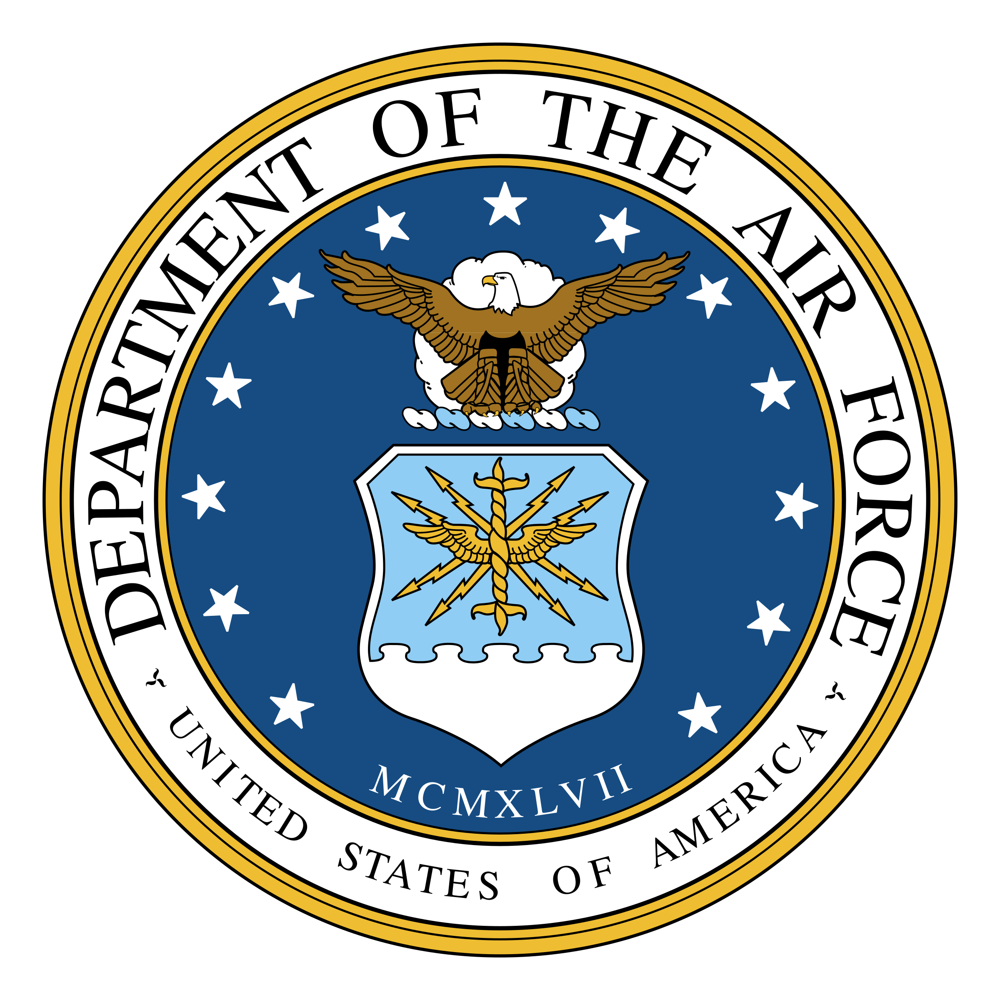

United States Air Force
Power Production Journeyman
Senior Airman
December 2006 - April 2011
-
Led the onboarding and training of new apprentices; taught maintenance and troubleshooting fundamentals for mission critical systems including six different generator types and three types of aircraft arresting systems
-
Maintained a high level of standards; praised for exhibiting selflessness, excellence, and integrity
-
Received the Air Force Good Conduct Medal for being an exemplary Airman and having character and efficiency ratings of
excellent or higher